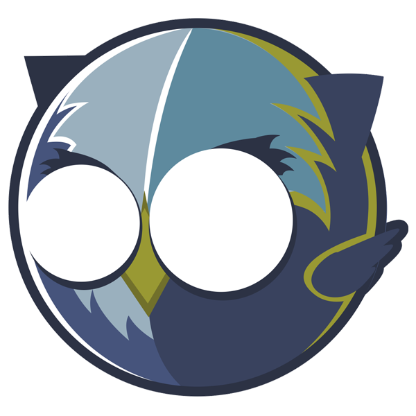

What's
Openkratio?

Back to the past...
- Formerly Open Data Sevilla
- Since Sept 2011
Openkratio is
A group of citizens who try to instill in society, and especially in the government, the principles of Open Government and Open Data .
Openkratio principles
|
|
Working areas
- Outreach and Awareness
- Training
- Lobbying
- Hacking
Channels
- Web page: openkratio.org
- Mailing list: opendatasev (Google Groups)
- Twitter account: @openkratio
- GitHub organization: github.com/openkratio
#AdoptaUnaPlaya
Herding a bunch of data for concerning about the environment and our beaches
adoptaunaplaya.es
What's #AdoptaUnaPlaya?
- Information about quality of bathing waters
- Mediate in behalf of citizens in reporting incidents on beaches
- Grow a community of citizens concerned about environment (in construction)
A bit of detail
- Data sources: Proyecto Nayade (MSC) / Guía de Playas (MAGRAMA) / Registro de Transporte de Emisiones y Contaminantes (MAGRAMA)
- Incident reporting platform: Crowdmap / FixMyStreet,
- Data analysis.
Challenges
- Nayade's data in non-machine-readable formats
- A FOIA request was done, but no transparency law for Spain yet ...
- We started a crowdsourcing campaing for harvesting data manually. Was a success!
- About to do the same with Guía de Playas
Lessons learnt
- The unavailability of machine-readable data slows down social innovation.
- The lack of harmonization between data sets cuts down the potential of data analysis.
- We need a transparency law for Spain and a true policy data harmonization.
#ProyectoColibri
We order for you Congreso.es data.
proyectocolibri.es
Proyecto Colibri
The "Proyecto Colibri" provides an ecosystem of inquiry the political activity of the Congress of Deputies (Government of Spain).
Motivation
- Poor Information Arquitecture on Institutional Websites
- Unstructured and Disjointed Information
- Provide an useful tool for hacks & hackers
- Hacktivism & Continuous learning
Building Process
- Analysis of the problem
- Information extraction (scraping + XML parser)
- Data model definition
- API resources definition
- Task planning (extract + update)
Technological Stack
- Python as a base
- Django as framework
- PostgreSQL as data management
- Beautiful Soup for scraping
- Tastypie to serve data (REST API)
Next steps
- Implement an app example
- API refactorization
- Collaboration with data consumers
- Open to suggestions and requests